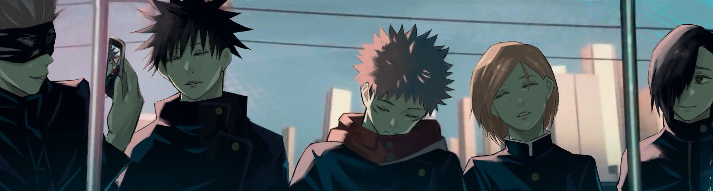
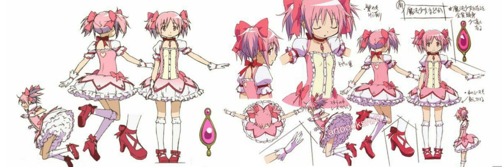
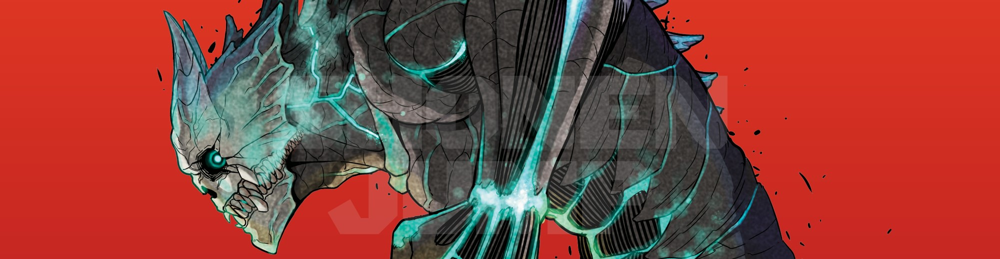

Jujutsu Kaisen
Published on March 4, 2025 | By Mel

Jujutsu Kaisen is a popular Japanese manga and anime series created by Gege Akutami. The story follows Yuji Itadori, a high school student who possesses extraordinary physical strength but lives a normal life. His life changes when he comes into contact with a cursed object — a rotting finger that houses a powerful curse. In an attempt to save his friends from a curse that attacks them, Yuji swallows the cursed finger and becomes the host of Satoru Gojo, a powerful sorcerer who works as a teacher at the Tokyo Metropolitan Magic Technical College.
After consuming the cursed object, Yuji becomes the vessel of Ryomen Sukuna, one of the most powerful curses in existence. Despite the danger this poses, Yuji joins the college, where he trains to become a Jujutsu Sorcerer, a practitioner who fights curses — malevolent, supernatural entities born from negative human emotions. He learns from his mentor, Gojo, and alongside classmates Megumi Fushiguro and Nobara Kugisaki, Yuji faces various threats from curses and learns about the world of Jujutsu Sorcery.
The series explores themes of life and death, morality, and the impact of curses on humanity. The main focus is on Yuji's struggle with Sukuna's overwhelming power and his desire to save people, while dealing with the complexities of the sorcery world, where not everything is as it seems. With the fate of the world at stake, the story also introduces a variety of powerful characters and intense battles with cursed spirits, leading to a deeper exploration of curse magic, relationships, and the essence of fear.
Jujutsu Kaisen blends intense action, dark themes, and emotional moments, making it a standout in the shonen genre.
Puella Magi Madoka Magica
Published on March 1, 2025 | By Mel

Puella Magi Madoka Magica is a Japanese anime series directed by Akiyuki Shinbo and produced by the studio Shaft. The series initially appears to be a typical magical girl story, but it quickly subverts expectations with its darker themes and complex narrative.
The story follows Madoka Kaname, a kind-hearted middle school girl who lives a peaceful life with her family and friends in a quiet town. One day, Madoka and her friend Sayaka Miki encounter a mysterious creature named Kyubey, who offers them the chance to become "magical girls." In exchange for their wish being granted, they must fight against witches, dark creatures that spread despair throughout the world. However, Kyubey’s offer comes with a hidden price: the magical girls must risk their lives while slowly losing their humanity.
As Madoka and Sayaka meet other magical girls, including the enigmatic Homura Akemi and the troubled Mami Tomoe, they learn the true nature of being a magical girl and the horrifying consequences that come with it. Homura, in particular, holds a secret — she is trapped in a time loop, constantly reliving the tragic events surrounding Madoka’s fate and attempting to protect her from the devastating truth about magical girls.
The series explores themes of sacrifice, hope, despair, and the consequences of wish fulfillment. As Madoka grapples with the decision of whether or not to become a magical girl, she faces the ultimate choice that could change the fate of all magical girls and the universe itself.
Puella Magi Madoka Magica is known for its stunning visual style, emotional depth, and its unflinching examination of the magical girl genre. It blends magical girl tropes with psychological horror, making it a unique and thought-provoking series that challenges the conventional expectations of the genre.
Kaiju No. 8
Published on February 28, 2025 | By Mel

Kaiju No. 8 is a Japanese manga series written and illustrated by Naoya Matsumoto. The story is set in a world where giant monsters known as kaiju frequently appear, threatening the safety of humanity. In response, the government has created a specialized defense force, called the Defense Force, to fight these terrifying creatures and protect the populace.
The main character, Kafka Hibino, is a 32-year-old man who dreams of joining the Defense Force and becoming a member of their elite Kaiju Defense Corps. However, Kafka has failed his exam multiple times and works as a cleaner in the Defense Force, picking up the messes left behind after battles with kaiju. Kafka secretly longs for a more exciting life, but his lack of strength and experience holds him back. His life takes a drastic turn when, during a battle with a kaiju, Kafka is accidentally exposed to its blood and undergoes a shocking transformation.
Kafka gains the ability to transform into a kaiju himself — specifically, a powerful and unique kaiju designated Kaiju No. 8. His new form grants him immense strength and agility, but it also puts him in direct conflict with the very force he admires. Despite his monstrous transformation, Kafka is determined to keep his identity a secret and to use his newfound powers to fight for humanity. As he balances his human life with his kaiju form, Kafka becomes entangled in dangerous battles and is forced to confront his true nature, as well as the dark secrets behind kaiju attacks.
The series focuses on themes of self-identity, responsibility, and the struggle to balance personal desires with the greater good. Kafka’s journey is filled with action, humor, and emotional moments as he tries to protect those he loves while grappling with his dual identity as a human and a kaiju.
Kaiju No. 8 blends elements of action, monster battles, and personal growth, making it an exciting and compelling read for fans of the shonen genre.